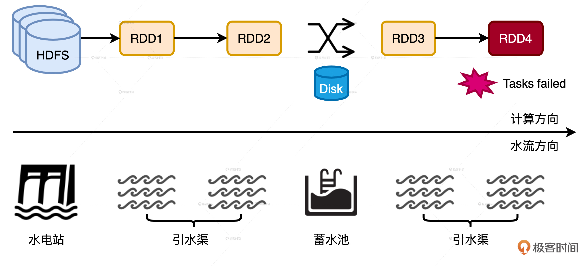
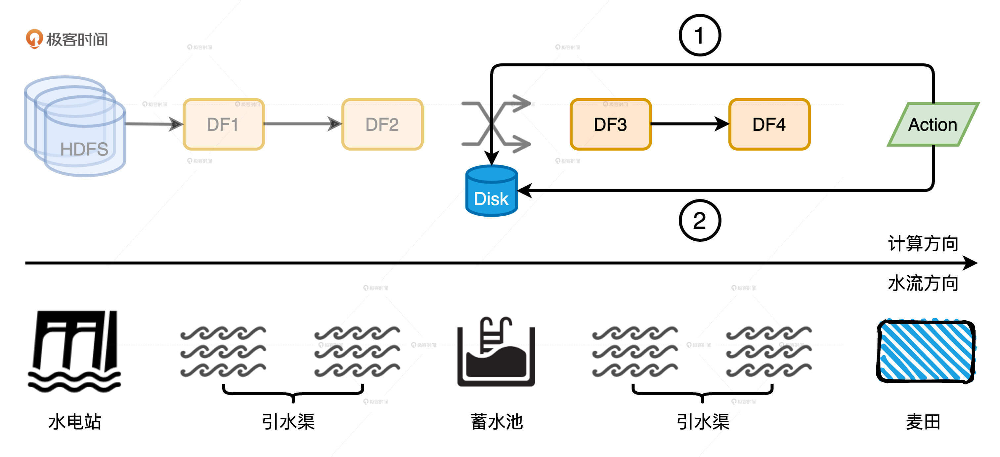

- 00 开篇词 Spark性能调优，你该掌握这些“套路”.md.html
- 01 性能调优的必要性：Spark本身就很快，为啥还需要我调优？.md.html
- 02 性能调优的本质：调优的手段五花八门，该从哪里入手？.md.html
- 03 RDD：为什么你必须要理解弹性分布式数据集？.md.html
- 04 DAG与流水线：到底啥叫“内存计算”？.md.html
- 05 调度系统：“数据不动代码动”到底是什么意思？.md.html
- 06 存储系统：空间换时间，还是时间换空间？.md.html
- 07 内存管理基础：Spark如何高效利用有限的内存空间？.md.html
- 08 应用开发三原则：如何拓展自己的开发边界？.md.html
- 09 调优一筹莫展，配置项速查手册让你事半功倍！（上）.md.html
- 10 调优一筹莫展，配置项速查手册让你事半功倍！（下）.md.html
- 11 为什么说Shuffle是一时无两的性能杀手？.md.html
- 12 广播变量（一）：克制Shuffle，如何一招制胜！.md.html
- 13 广播变量（二）：如何让Spark SQL选择Broadcast Joins？.md.html
- 14 CPU视角：如何高效地利用CPU？.md.html
- 15 内存视角（一）：如何最大化内存的使用效率？.md.html
- 16 内存视角（二）：如何有效避免Cache滥用？.md.html
- 17 内存视角（三）：OOM都是谁的锅？怎么破？.md.html
- 18 磁盘视角：如果内存无限大，磁盘还有用武之地吗？.md.html
- 19 网络视角：如何有效降低网络开销？.md.html
- 20 RDD和DataFrame：既生瑜，何生亮？.md.html
- 21 Catalyst逻辑计划：你的SQL语句是怎么被优化的？（上）.md.html
- 22 Catalyst物理计划：你的SQL语句是怎么被优化的（下）？.md.html
- 23 钨丝计划：Tungsten给开发者带来了哪些福报？.md.html
- 24 Spark 3.0（一）：AQE的3个特性怎么才能用好？.md.html
- 25 Spark 3.0（二）：DPP特性该怎么用？.md.html
- 26 Join Hints指南：不同场景下，如何选择Join策略？.md.html
- 27 大表Join小表：广播变量容不下小表怎么办？.md.html
- 28 大表Join大表（一）：什么是“分而治之”的调优思路？.md.html
- 29 大表Join大表（二）：什么是负隅顽抗的调优思路？.md.html
- 30 应用开发：北京市小客车（汽油车）摇号趋势分析.md.html
- 31 性能调优：手把手带你提升应用的执行性能.md.html
- Spark UI（上）深入解读Spark作业的“体检报告”.md.html
- Spark UI（下）：深入解读Spark作业的“体检报告”.md.html
- 期末考试 “Spark性能调优”100分试卷等你来挑战！.md.html
- 结束语 在时间面前，做一个笃定学习的人.md.html
- 捐赠
18 磁盘视角：如果内存无限大，磁盘还有用武之地吗？
你好，我是吴磊。
我们都知道，Spark的优势在于内存计算。一提到“内存计算”，我们的第一反应都是：执行效率高！但如果听到“基于磁盘的计算”，就会觉得性能肯定好不到哪儿去。甚至有的人会想，如果Spark的内存无限大就好了，这样我们就可以把磁盘完全抛弃掉。当然，这个假设大概率不会成真，而且这种一刀切的思维也不正确。
如果内存无限大，我们确实可以通过一些手段，让Spark作业在执行的过程中免去所有的落盘动作。但是，无限大内存引入的大量Full GC停顿（Stop The World），很有可能让应用的执行性能，相比有磁盘操作的时候更差。这就不符合我们一再强调的，调优的最终目的是在不同的硬件资源之间寻求平衡了。
所以今天这一讲，我们就来说说磁盘在Spark任务执行的过程中都扮演哪些重要角色，它功能方面的作用，以及性能方面的价值。掌握它们可以帮助我们更合理地利用磁盘，以成本优势平衡不同硬件资源的计算负载。
磁盘在功能上的作用
在Spark当中，磁盘都用在哪些地方呢？在Shuffle那一讲我们说过，在Map阶段，Spark根据计算是否需要聚合，分别采用PartitionedPairBuffer和PartitionedAppendOnlyMap两种不同的内存数据结构来缓存分片中的数据记录。分布式计算往往涉及海量数据，因此这些数据结构通常都没办法装满分区中的所有数据。在内存受限的情况下，溢出机制可以保证任务的顺利执行，不会因为内存空间不足就立即报OOM异常。
以“仙女散花”的游戏为例，我们用groupByKey去收集不同花色的花朵。在PartitionedPairBuffer大小为4的情况下，当小红拿到的花朵数量超过4朵的时候，其余花朵要想进入内存，Spark就必须把PartitionedPairBuffer中的内容暂时溢出到临时文件，把内存空间让出来才行。这就是磁盘在功能上的第一个作用：溢出临时文件。
当分区中的最后一批数据加载到PartitionedPairBuffer之后，它会和之前溢出到磁盘的临时文件一起做归并计算，最终得到Shuffle的数据文件和索引文件也会存储到磁盘上，也就是我们常说的Shuffle中间文件。这就是磁盘的在功能上的第二个作用：存储Shuffle中间文件。
除此之外，磁盘的第三个作用就是缓存分布式数据集。也就是说，凡是带_DISK_字样的存储模式，都会把内存中放不下的数据缓存到磁盘。这些缓存数据还有刚刚讲的临时文件、中间文件，都会存储到spark.local.dir参数对应的文件系统目录中。
性能上的价值
在配置项那一讲我们说过，把spark.local.dir这个参数配置到SDD或者其他访问效率更高的存储系统中可以提供更好的 I/O 性能。除此之外，磁盘复用还能给执行性能带来更好的提升。所谓磁盘复用，它指的是Shuffle Write阶段产生的中间文件被多次计算重复利用的过程。下面，我就通过两个例子给你详细讲讲，磁盘复用的常见应用和它的收益。
失败重试中的磁盘复用
我们经常说，在没有RDD Cache的情况下，一旦某个计算环节出错，就会触发整条DAG从头至尾重新计算，这个过程又叫失败重试。严格来说，这种说法是不准确的。因为，失败重试的计算源头并不是整条DAG的“头”，而是与触发点距离最新的Shuffle的中间文件。

我们以文稿示意图中的DAG为例子，HDFS源数据经过两次转换之后，分别得到RDD1和RDD2。RDD2在Shuffle之后再进行两次计算，分成得到RDD3和RDD4。
不幸的是，在计算RDD4的过程中有些任务失败了。在失败重试的时候，Spark确实会从RDD4向前回溯，但是有了磁盘复用机制的存在，它并不会一直回溯到HDFS源数据，而是直接回溯到已经物化到节点的RDD3的“数据源”，也就是RDD2在Shuffle Write阶段输出到磁盘的中间文件。因此，磁盘复用的收益之一就是缩短失败重试的路径，在保障作业稳定性的同时提升执行性能。
为了方便你理解，我们不妨把DAG中的流水线计算想象成是干渠灌溉，黄土高坡上的麦田一年到头也喝不到几滴雨水，完全依靠人工干渠进行灌溉。当水电站开闸放水的时候，水会沿着干渠一路向东流进支渠去滋养如饥似渴的麦苗。
一个水电站往往服务方圆百里大大小小的村子，如果每次灌溉都等着水电站开闸放水，遇上大旱的年头，水还没流到支渠，麦苗就都旱死了。要是能沿着干渠，每隔一段距离就修建一座蓄水池，那么附近的村民就能就近灌溉了。在这个干渠灌溉的类比中，水电站的水是HDFS数据源头，蓄水池就是Shuffle中间文件，就近取水、就近灌溉就是磁盘复用机制。
ReuseExchange机制下的磁盘复用
你可能会说：“磁盘复用也没什么嘛，无非是在失败重试的时候，抄个近道、少走些弯路。在任务不出错的情况下是利用不到这项优势的。”没错，所以我们再来说说磁盘复用的另一种形式：ReuseExchange机制。ReuseExchange是Spark SQL众多优化策略中的一种，它指的是相同或是相似的物理计划可以共享Shuffle计算的中间结果，也就是我们常说的Shuffle中间文件。ReuseExchange机制可以帮我们削减I/O开销，甚至节省Shuffle，来大幅提升执行性能。
那我们该怎么有效利用ReuseExchange机制呢？在数据仓库场景下，为了得到数据报表或是可视化图表，用户往往需要执行多个相似的查询，甚至会把同样的查询语句执行多次。在这种情况下，ReuseExchange策略在执行效率方面会带来非常大的收益。

即便是在没有DataFrame Cache的情况下，相同或是相似的查询也可以利用ReuseExchange策略，在缩短执行路径的同时，消除额外的Shuffle计算。从数据复用的角度来说，ReuseExchange和DISK_ONLY模式的DataFrame Cache能起到的作用完全等价。
咱们来举个例子。现在有这样一个业务需求：给定用户访问日志，分别统计不同用户的PV（Page Views，页面浏览量）、UV（Unique Views，网站独立访客），然后再把两项统计结果合并起来，以备后用。其中，用户日志包含用户ID、访问时间、页面地址等主要字段。业务需求不仅明确也很简单，我们很快就能把代码写出来。
//版本1：分别计算PV、UV，然后合并
// Data schema (userId: String, accessTime: Timestamp, page: String)
val filePath: String = _
val df: DataFrame = spark.read.parquet(filePath)
val dfPV: DataFrame = df.groupBy("userId").agg(count("page").alias("value")).withColumn("metrics", lit("PV"))
val dfUV: DataFrame = df.groupBy("userId").agg(countDistinct("page").alias("value")).withColumn("metrics ", lit("UV"))
val resultDF: DataFrame = dfPV.Union(dfUV)
// Result样例
| userId | metrics | value |
| user0 | PV | 25 |
| user0 | UV | 12 |
代码逻辑是先读取用户日志，然后在同一个DataFrame之上分别调用count和countDistinct计算PV、UV，最后把PU、UV对应的两个DataFrame合并在一起。
虽然代码实现起来简单直接，但是，如果我们在resultDF之上调用explain或是通过Spark UI去查看物理计划就会发现，尽管count和countDistinct是基于同一份数据源计算的，但这两个操作的执行路径是完全独立的。它们各自扫描Parquet源文件，并且通过Shuffle完成计算，在Shuffle之前会先在Map端做本地聚合，Shuffle之后会在Reduce端再进行全局聚合。
对于绝大多数的合并场景来说，计算流程大抵如此。显然，这样的做法是极其低效的，尤其是在需要合并多个数据集的时候，重复的数据扫描和分发就会引入更多的性能开销。那么，有没有什么办法，让同一份数据源的多个算子只读取一次Parquet文件，且只做一次Shuffle呢？
做了这么半天铺垫，答案自然是“有”。针对版本1中的代码，我们稍作调整就可以充分利用ReuseExchange策略来做优化。
//版本2：分别计算PV、UV，然后合并
// Data schema (userId: String, accessTime: Timestamp, page: String)
val filePath: String = _
val df: DataFrame = spark.read.parquet(filePath).repartition($"userId")
val dfPV: DataFrame = df.groupBy("userId").agg(count("page").alias("value")).withColumn("metrics", lit("PV"))
val dfUV: DataFrame = df.groupBy("userId").agg(countDistinct("page").alias("value")).withColumn("metrics ", lit("UV"))
val resultDF: DataFrame = dfPV.Union(dfUV)
// Result样例
| userId | metrics | value |
| user0 | PV | 25 |
| user0 | UV | 12 |
需要调整的部分仅仅是数据源读取，其他部分的代码保持不变。在用Parquet API读取用户日志之后，我们追加一步重分区操作，也就是以userId为分区键调用repartition算子。
经过这个微小的改动之后，我们重新在resultDF之上调用explain或是查看Spark UI会发现，在新的物理计划中，count或是countDistinct分支出现了ReuseExchange字样，也就是其中一方复用了另一方的Exchange结果。
通过观察执行计划不难发现，ReuseExchange带来的收益相当可观，不仅是数据源只需要扫描一遍，而且作为“性能瓶颈担当”的Shuffle也只发生了一次。
另外，你可能也会发现，复用Shuffle中间结果的是两个不完全相同的查询，一个是用count做统计计数，另一个是用countDistinct做去重计数。你看，两个相似的查询，通过ReuseExchange数据复用，达到了使用DISK_ONLY缓存的等价效果。换句话说，你不需要手动调用persist(DISK_ONLY)，也不需要忍受磁盘缓存的计算过程，就可以享受它带来的收益。这惊不惊喜、意不意外？
你可能会问：“既然ReuseExchange机制这么好用，满足什么条件才能触发Spark SQL去选择这个执行策略呢？”事实上，触发条件至少有2个：
- 多个查询所依赖的分区规则要与Shuffle中间数据的分区规则保持一致
- 多个查询所涉及的字段（Attributes）要保持一致
对于第一个条件，我们在案例中已经演示过了，两个查询都用userId分组，这就要求所依赖的数据必须要按照userId做分区。这也是为什么我们在版本2的代码中，会添加以userId为分区键的repartition算子，只有这样，Shuffle中间结果的分区规则才能和查询所需的分区规则保持一致。
仔细观察count和countDistinct两个查询所涉及的字段，我们会发现它们完全一致。实际上，如果我们把count语句中的count("page")改为count("*")也并不影响PV的计算，但是，看似无关痛痒的改动会导致第二个条件不能满足，从而无法利用ReuseExchange机制来提升执行性能。版本2中的count("page")改为count("*")之后，物理计划会回退到版本1，我把其中的变化留给你作为课后作业去对比。
小结
磁盘虽然在处理延迟上远不如内存，但在性能调优中依然不可或缺。理解磁盘在功能上和性能上的价值，可以帮助我们更合理地利用磁盘，以成本优势平衡不同硬件资源的计算负载。
从功能上看，磁盘在Spark中主要有3方面的作用，分别是溢出临时文件、缓存分布式数据集和存储Shuffle中间文件。这3方面功能在提升作业稳定性的同时，也为执行效率的提升打下了基础。
从性能上看，利用好磁盘复用机制，可以极大地提高应用的执行性能。磁盘复用指的是Shuffle Write阶段产生的中间文件被多次计算重复利用的过程。磁盘复用有两种用途，一个是失败重试，另一个是ReuseExchange机制。其中，失败重试指的就是任务失败之后尝试重头计算。这个过程中，磁盘复用缩短了失败重试的路径，在保障作业稳定性的同时，提升执行性能。
ReuseExchange策略指的是，相同或是相似的物理计划可以共享Shuffle计算的中间结果。ReuseExchange对于执行性能的贡献相当可观，它可以让基于同一份数据源的多个算子只读取一次Parquet文件，并且只做一次Shuffle，来大幅削减磁盘与网络开销。
不过，要想让Spark SQL在优化阶段选择ReuseExchange，业务应用必须要满足2个条件：
- 多个查询所依赖的分区规则要与Shuffle中间数据的分区规则保持一致
- 多个查询所涉及的字段要保持一致
每日一练
- 请你把count计算中的
count("page")改为count("*")，以此来观察物理计划的变化，并在留言区说出你的观察 - 为了触发ReuseExchange机制生效，我们按照userId对数据集做重分区，结合这一点，你不妨想一想，在哪些情况下，不适合采用ReuseExchange机制？为什么？
期待在留言区看到你的思考和答案，我们下一讲见！
© 2019 - 2023 Liangliang Lee. Powered by gin and hexo-theme-book.